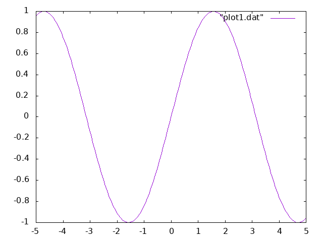

Learning Haskell via Advent of Code
My Goblins and Elves do battle in Day 15
Inspired by this post from Forest Smith on his experience learning Rust with Advent of Code, I wanted to share my own experience working through the problems this past December to improve my Haskell skills.
Advent of Code
Advent of Code (AoC) is a collection of holiday-themed programming puzzles structured as an Advent calendar—one puzzle is released each day at midnight from December 1st until the 25th. The puzzles are a bit reminiscent of the Project Euler problems, but with less math and more fun. The great thing about AoC is that there’s something for everyone. For those who like competitive programming, there’s a leaderboard tracking the 100 fastest users to solve each day’s puzzle. Others don’t compete, but just enjoy solving the puzzles or use them to learn something new.
I decided to use the puzzles as an opportunity to learn some more Haskell. Haskell and I have had an off-and-on relationship the last several years. The first time I tried it (in 2014), my mind was blown by functional programming, pattern matching, type theory, and particularly Cabal “dependency hell”—the circle of hell that Dante must have forgotten about. Even back then, a part of me really liked Haskell, but I was just in over my head.
Since then, Elixir has been my gateway drug into real world FP, and I can feel a lot of Haskell concepts starting to really click in my mind. Also, improvements to Cabal and new tools like Stack have made the experience smoother for Haskell beginners.
My Experience with Haskell
All of my solutions can be found in my repository on GitHub. Towards the end, my holiday travels got in the way, so I only managed 18 of the 25 puzzles, but I’m still quite proud of that.At first, I was so motivated that I wanted to do them all in Racket, too, but that proved a bit too ambitious. I think I’ll try Racket next year.
Structuring Solutions
I spend so much time fiddling with build tools and manifests at work that I find it really satisfying to just pass a program directly to the compiler.
I decided to write each day’s solution (usually two parts) as a single DayN.hs file that I’d run with runhaskell or compile with ghc. I generally stuck to what’s included in the GHC distribution (mostly base and containers) so that the programs were free of additional dependencies. (I made a few exceptions that I’ll mention later.)
Working with I/O
The AoC puzzles have a personalized input file that you need to download and run against your program. In addition to the input file, there is usually a simplified example to check the results of your algorithm against. It’s a good fit for the Unix philosophy of having programs exchange data via the standard streams, as I could just redirect different files to the program’s stdin, as well as use pipes for some light preprocessing. So most of the programs are run like this:
Haskell’s Prelude provides a very elegant abstraction around the processing of standard IO streams: interact :: (String -> String) -> IO () (docs). You just provide a function that accepts stdin as a String and returns another String to be written to stdout, and it handles the rest. I used variations of this pattern in most solutions:
Parsing Input: To regex or not to regex
The different puzzles called for different approaches to parsing input. Some of the inputs were simple enough that lines and a little transformation did the job, whereas others called for a regular expression or a real parser. (Sometimes the parsing was even the biggest challenge.)
Many in the Haskell community tend to prefer parser combinators like Parsec and its derivatives for jobs that programmers in other languages would use a regular expression for. One sign of this (or maybe the reason) is that you’ll find Parsec bundled with GHC, but not any regex libraries.
I actually quite like regexps (short ones, anyway) and I think they can be the right tool for a lot of jobs. For example, Day 10 required parsing position and velocity pairs from the following input:
position=<-50310, 10306> velocity=< 5, -1>
position=<-20029, -9902> velocity=< 2, 1>
position=< 10277, -30099> velocity=<-1, 3>Regular expressions are particularly handy for extracting numbers from text with a lot of extraneous information and whitespace you don’t care about.
So I figured out how to use them in Haskell, which is a bit of a challenge itself. I actually went in a different direction than the linked post and used Text.Regex.TDFA, which is a new, pure Haskell regex engine.
positionRe = "position=<[[:space:]]*(-?[0-9]+),[[:space:]]*(-?[0-9]+)>"
(_, _, _, captures) = str =~ positionReIn other cases, using parser combinators really was the right approach. For example, in Day 4, my task was to sneak into Santa’s prototype suit manufacturing lab, which involved parsing the “event log” of different elf guards as they’d start their shifts, fall asleep, wake up, and so on:
[1518-11-20 23:58] Guard #1229 begins shift
[1518-11-21 00:51] falls asleep
[1518-11-21 00:53] wakes up
[1518-11-21 00:57] falls asleep
[1518-11-21 00:59] wakes up
[1518-11-22 00:00] Guard #2441 begins shift
[1518-11-22 00:12] falls asleep
[1518-11-22 00:13] wakes up
[1518-11-22 00:17] falls asleep
[1518-11-22 00:46] wakes up
[1518-11-22 00:52] falls asleep
[1518-11-22 00:54] wakes upI’m not saying you couldn’t solve this with a regex, but the fact that each guard can take an arbitrary number of naps would make it very ugly. So I went with Megaparsec, which I’d already used in another project. It’s more or less the same API as Parsec, but includes some fixes and enhancements that make it a bit nicer to work with. So far it’s been a real pleasure to use.
To parse the event log, I cobbled together the following:
data Shift = Shift Integer [ShiftEvent] deriving Show
data ShiftEvent = Asleep Minutes
| Awake Minutes
deriving Show
type Minutes = Integer
type Parser = Parsec Void String
minutes :: Parser Minutes
minutes = do
char '['
skipSomeTill (digitChar <|> char '-' <|> spaceChar) (char ':')
min <- count 2 digitChar
char ']'
return $ read min
slumber :: Parser [ShiftEvent]
slumber = do
asleepAt <- minutes
string " falls asleep\n"
awakeAt <- minutes
string " wakes up\n"
return $ [Asleep asleepAt, Awake awakeAt]
shift :: Parser Shift
shift = do
_start <- minutes
string " Guard #"
guardId <- some digitChar
string " begins shift\n"
events <- many (try slumber)
return $ Shift (read guardId) (concat events)
shifts :: Parser [Shift]
shifts = many shiftWhile the whitespace handling is a bit sloppy here, it has some nice properties. It’s not possible to parse an Awake event followed by another Awake event. Parser combinators make it very easy to express a particular order that must be followed.
Profiling Slow Code
Most of the puzzles have two parts. It’s common to be able to brute force the solution to Part 1, but to need to step back and think about how to more efficiently solve Part 2. It’s a little bit like this:
- Part 1: Compute factorial(n).
- Part 2: Compute factorial(n1000).
In other cases, my initial solution was just plain slow because I’d used the wrong data structures or missed a critical bottleneck. For these cases, I used GHC’s built-in profiling tools.
GHC provides two particularly useful profiling options:
-prof- Compiles for cost-center profiling. This means profiling is turned on, but adding this alone doesn’t define any cost centers. Cost centers are just program annotations that flag a particular expression for profiling. They can be added manually with{-# SCC myId #-}.-fprof-auto- This option automatically gives all bindings SCC annotations (with the exception of those referenced by anINLINEpragma), so you don’t need to add any manually.
At this point, we can compile a program for profiling, but we still need to tell the runtime system (RTS) to generate the profile when the program is ran. This can be done (among other ways), via command-line arguments:
+RTS- Demarcates the beginning of the RTS options (which are removed from the argv given to your program). Ended with-RTSor automatically when the end of arguments is reached.-p- RTS option that produces a time profile (i.e. where is the program spending its time?).-h- RTS option that produces a heap profile (i.e. memory usage).
My Day 15 solution (source), which produced the GIF at the top of the post, was initially horribly slow.
The puzzle involves creating a simulation of a battle between an army of elves and an army of goblins in true dungeon crawler style. Each unit on the map has a sort of deterministic AI. Units each have turns in a pre-defined series, and each turn they can either attack an enemy in range, or move one square towards the nearest enemy. Finding the nearest enemy is definitely the tough part.
Units cannot move through walls (they’re fighting in a cave) and they cannot move through each other—so the simulation requires finding, for each unit, the shortest path to an enemy.In the event of multiple shortest paths to an enemy, the directions specify that the next enemy in reading order (i.e., left-to-right, then top-to-bottom) is chosen. This all means calculating the paths in each round is O(n2), as we have to calculate the paths between all units in order to find the shortest ones.
From the puzzle directions:
Targets: In range: Reachable: Nearest: Chosen:
####### ####### ####### ####### #######
#E..G.# #E.?G?# #E.@G.# #E.!G.# #E.+G.#
#...#.# --> #.?.#?# --> #.@.#.# --> #.!.#.# --> #...#.#
#.G.#G# #?G?#G# #@G@#G# #!G.#G# #.G.#G#
####### ####### ####### ####### #######In order to find the shortest paths, I used Dijkstra’s algorithm. My implementation was correct on small sample inputs, but was too slow to run on my real input. I knew something was wrong, so I used the profiler to see what my program was up to:
Running the second line generates a Day15.prof file in the current directory.
By inspecting the report, I found the problem. Dijkstra’s algorithm works by keeping a set of unvisited neighbor nodes and visiting these in order by shortest distance. I had actually used Data.Set to store these unvisited neighbors and was using minimumBy to find the next one to visit. Unsurprisingly, this was a very hot code path, and my program was spending 99% of its time there.
A priority queue makes this operation efficient. Elements of the queue are ranked by their priority—here, by their distance. I used the Data.PSQueue implementation, which supports O(1) retrieval of the element with the lowest priority, as well as O(log n) insertion, deletion and update operations.
My program now produces the following time profile, which is quite reasonable:
Tue Feb 5 20:35 2019 Time and Allocation Profiling Report (Final)
Day15 +RTS -p -hc -RTS
total time = 60.23 secs (60231 ticks @ 1000 us, 1 processor)
total alloc = 75,047,638,704 bytes (excludes profiling overheads)
COST CENTRE MODULE SRC %time %alloc
lookup Data.PSQueue Data/PSQueue.hs:(117,1)-(125,37) 33.4 35.4
open Main Day15.hs:127:1-55 20.3 1.6
insert Data.PSQueue Data/PSQueue.hs:(139,1)-(149,49) 12.9 21.0
adjustWithKey Data.PSQueue Data/PSQueue.hs:(190,1)-(198,62) 12.1 13.0
deleteMin Data.PSQueue Data/PSQueue.hs:(317,1)-(318,43) 6.2 7.8
dijkstra.update Main Day15.hs:(115,3)-(121,31) 6.1 5.9
dijkstra.prune Main Day15.hs:(108,3)-(113,33) 1.6 4.2
adjacents Main Day15.hs:139:1-67 1.3 2.2
dijkstra.prune.neighbors Main Day15.hs:112:5-78 1.1 2.2
openAdjacents Main Day15.hs:142:1-61 1.1 2.0
dijkstra.initQ Main Day15.hs:(99,3)-(100,78) 0.5 1.8The only red flag is the 60.23 sec it takes to run! I expected some overhead, but not quite so much. Compiling again without the profiling options and with -O2 brings the total runtime down to a few seconds.
Pattern Matching
I learned from Elixir & Erlang how powerful pattern matching can be. Luckily Haskell gets us mostOne of the things I seem to miss the most is being able to match for equality of two values by using the same variable twice. For example, in Erlang the match expression {x, x} = {0, 0} succeeds, whereas {x, x} = {0, 1} does not (match error). In Haskell, given a similar (x, x) = (0, 0), the compiler complains about multiple declarations of x.
of the way there and with types to boot.
In the puzzles, I often found it lovely to just transliterate the mapping in the puzzle directions to one in Haskell.
For example, Day 12 called for building a kind of single-row cellular automatonFor example, Conway’s Game of Life is a cellular automaton with a similarly defined rule-set.
from an initial state with rules for whether each cell is occupied (alive) or unoccupied (dead) in the next generation:
initial state: #..#.#..##......###...###
...## => #
..#.. => #
.#... => #
.#.#. => #
.#.## => #
.##.. => #
.#### => #
#.#.# => #
#.### => #
##.#. => #
##.## => #
###.. => #
###.# => #
####. => #The above rules only cover the “alive” cases; anything else is assumed dead in the next round. I was pretty happy with how this converted to Haskell, where I defined a function to advance a block of cells to the next generation based on the rules above:
transform :: String -> String
transform ('#' : '#' : '#' : '#' : ".") = "####."
transform ('#' : '#' : '.' : '#' : ".") = "####."
transform ('#' : '#' : '.' : '.' : ".") = "###.."
transform ('#' : '.' : '#' : '#' : "#") = "#.###"
transform ('#' : '.' : '.' : '#' : ".") = "#.##."
transform ('.' : '#' : '#' : '#' : "#") = ".####"
transform ('.' : '#' : '#' : '.' : "#") = ".##.#"
transform ('.' : '#' : '.' : '.' : "#") = ".##.#"
transform ('.' : '#' : '.' : '.' : ".") = ".##.."
transform ('.' : '.' : '#' : '#' : "#") = "..###"
transform ('.' : '.' : '#' : '.' : "#") = "..#.#"
transform ('.' : '.' : '.' : '#' : "#") = "..###"
transform (l2 : l1 : _ : r1 : r2 ) = l2 : l1 : '.' : r1 : r2Algebraic Data Types
Algebraic data types are wonderfully expressive for certain problems. I sorely miss them when working in dynamic languages.
For example, on Day 13, which involved building an ASCII rail network, I used the ADTs to capture all the possible states my tracks could be in:
data Track = Track TrackType TrackState
deriving (Show, Eq)
-- | Tracks can point in different directions or be intersections
data TrackType = TVertical -- |
| THorizontal -- -
| TDiagonalUp -- /
| TDiagonalDown -- \
| TIntersection -- +
deriving (Show, Eq)
-- | Tracks can either be clear or occupied by a cart or crash
data TrackState = SCart CartDirection IntersectionRule
| SCrash
| SClear
deriving (Show, Eq)
-- | Carts can move in four directions
data CartDirection = DUp
| DDown
| DLeft
| DRight
deriving (Show, Eq)
-- | Carts cycle through rules for which way to turn at an intersection
data IntersectionRule = RLeft
| RStraight
| RRight
deriving (Show, Eq)
type Coord = (Integer, Integer)
type TrackNetwork = Map Coord TrackIt was then very helpful to have the compiler’s help in making sure I’d handled all the possible values of union types—for example, every track type above in the logic to move a cart.
I think even more beneficial than type checking was how designing the types for each problem helped me to plan the solution before writing any real code. Thinking in terms of types makes it possible to start at the very top and drill your way down.
In the Day 13 puzzle, the objective for the first part was—given a number of carts hurtling down the tracks, eventually right at one another—to find the first cart crash. A simple network of tracks looks like this:
x axis ->
y /->-\
| | | /----\
v | /-+--+-\ |
| | | | v |
\-+-/ \-+--/
\------/So I started there with the assumption that I’d need a type for the entire network of tracks, and a type for the coordinate pair where the crash occurs:
This then led to the definition of the track network as a map of coordinates to tracks:
Then I compiled all the information about tracks from the description into the track type. In order to package everything up together—the track direction and whatever’s on top of it—I decided to also store the carts with the tracks themselves:
data Track = Track TrackType TrackState
-- | Tracks can point in different directions or be intersections
data TrackType = TVertical -- |
| THorizontal -- -
| TDiagonalUp -- /
| TDiagonalDown -- \
| TIntersection -- +
-- | Tracks can either be clear or occupied by a cart or crash
data TrackState = SCart CartDirection IntersectionRule
| SCrash
| SClearFrom here, I continued with carts, which travel in a particular direction and the cycling intersection rule that tells the carts which way to turn.
-- | Carts can move in four directions
data CartDirection = DUp
| DDown
| DLeft
| DRight
-- | Carts cycle through rules for which way to turn at an intersection
data IntersectionRule = RLeft
| RStraight
| RRightBy starting with the types, I had a solid foundation to write the logic to parse the tracks and simulate the cart travel. This is something I’m definitely starting to miss in dynamic languages. There I can still plan the structure of nested data structures, but I can’t encode the rules into its definition in quite the same way.
Plotting Data with Gnuplot
For a few different puzzles, I found it useful to plot data generated by the program in order to visualize it.
There are a number of different Haskell libraries for creating charts that rely on different backends. For example, the Chart library is backed by Cairo and provides a number of different chart types and export formats.
After looking around, I settled on easyplot, which wraps the gnuplot command line utility. The package can generate .dat files with the plot data in the Gnuplot-supported format and can run the X11. For example, the following plots two points:
It’s also possible to pass functions:
Plots can also be rendered to PNG instead by swapping X11 for (PNG "sin.png"):

Gnuplot is ancient, so it doesn’t produce the prettiest charts, but I found it and its Haskell wrapper lovely for their simplicity. Without passing any options, they already produce something reasonable. This is great for trying to make sense of data without getting bogged down in the the details.
With the .dat file generated by the Haskell wrapper, gnuplot can also be ran directly, which allows for configuring plotting on the command line, e.g.:
Other programs can also render Gnuplot .dat files, so there’s a lot you can do with the data once it’s out of your Haskell program.
I used this strategy for Day 10, which involved finding a message formed by shooting stars as they align for a split second. I didn’t really know what to expect—I wasn’t sure if all the stars would cluster together or only some of them, so I decided to plot the coordinates when alignment reached a certain threshold and take a look. It worked pretty well:
 In case you’re wondering, as I did for a long while, the message is upside down.
In case you’re wondering, as I did for a long while, the message is upside down.
Here I used the gnuplot command above to squeeze the y-axis to make the letters readable.
Formatting Code
While it has nothing to do with puzzles, automatic code formatting has become an important part of my workflow.
This past year, I’ve been using Elixir’s mix format (inspired by tools like gofmt) to format all the Elixir code I write. I used to think aligning the code to make it “pretty” was my job, but now I’ve realized that’s a big waste of time.
Haskell doesn’t yet and may never have a canonical formatter included with GHC, but there are some different packages to fill this need.
I used brittany to format my solutions and was impressed with the results. I didn’t always agree with it’s choices, but I think that’s the trade-off when using a formatter.